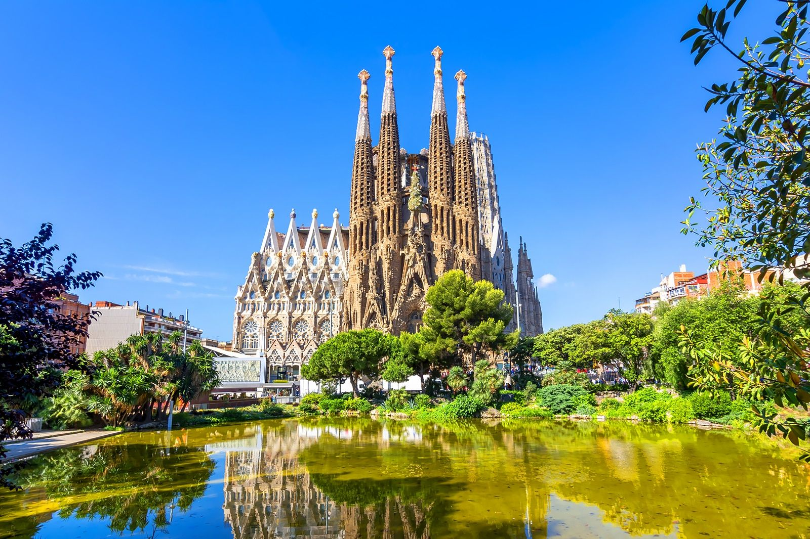
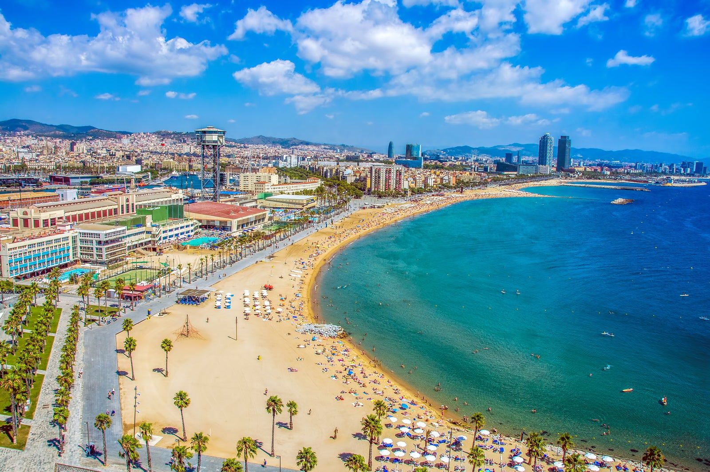
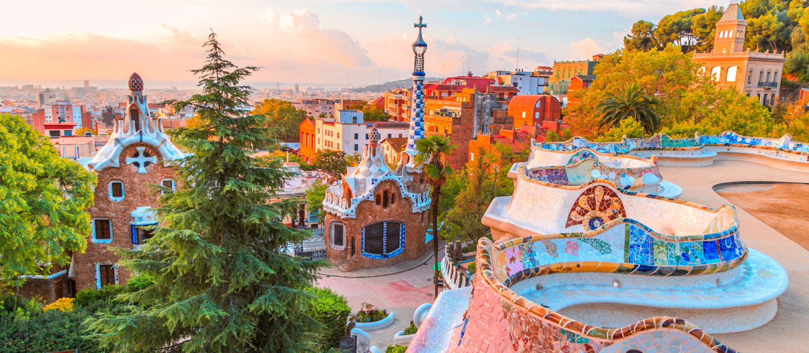

Barcelona és una ciutat situada a Catalunya, al nord-est d'Espanya. Es troba al costat del mar Mediterrani.

Barcelona és una de les ciutats més importants de Catalunya. Té una gran importància cultural, turística i econòmica.
La ciutat és coneguda pels seus edificis modernistes, les seves platges i els seus carrers.
Barcelona té una història molt antiga. Durant l'època romana, la ciutat era coneguda com Barcino.
Els romans van construir edificis i muralles que encara es poden veure en alguns llocs de la ciutat.
Barcelona té una cultura molt variada. El modernisme català és molt important en la seva arquitectura.

Antoni Gaudí va ser un arquitecte molt important.
Barcelona té molts llocs turístics i monuments importants.

El Park Güell és un parc dissenyat per Antoni Gaudí.
Barcelona està dividida en deu districtes.
| Número | Districte |
|---|---|
| 1 | Ciutat Vella |
| 2 | Eixample |
| 3 | Sants-Montjuïc |
| 4 | Les Corts |
| 5 | Sarrià-Sant Gervasi |
El contingut està basat en informació de la Viquipèdia.
Article original: Barcelona - Viquipèdia
Llicència del text: CC BY-SA.
Data d'accés: 22 de setembre de 2026.
Les imatges s'han obtingut de Wikimedia Commons. Cal indicar l'autor i la llicència de cada imatge.
Projecte HTML i CSS - Leo